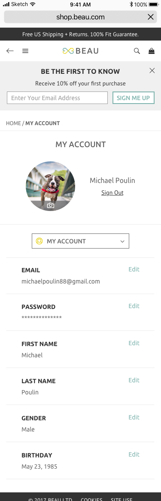

Beau
Website (Desktop + Mobile)
User Experience, Branding, Visual Design
5 months // 2017
If you know me at all, you know that I have unconditional love for dogs. I am a mother of two dogs, and I have found shopping for their collars and leashes online pretty difficult. With this frustration, I decided to take the matter into my own hands and create an e-commerce site called Beau. This was my dream project because who doesn’t like to see photos of dogs everyday for work? I hope you enjoy learning about this project as much as I loved building it!

Project Overview
Beau is an online pet accessory store that carries high-quality and budget-friendly dog collars and leashes. Their products are made with durable materials, such as leather, cotton, and suede. With a wide range of styles to choose from, Beau can help you find the perfect collar or leash for your pooch.
Problem
Dog owners are often hesitant to purchase dog collars and leashes online due uncertainty of product quality, sizing, and secure and fast online transactions.
Solution
In order to create a trusted experience for purchasing pet accessories, Beau commits to include detailed product descriptions and pictures, create a community where users can share reviews and knowledge with each other, and provide a secure and convenient checkout.
1. Empathize
In order to design and architect an e-commerce site that provides a satisfactory experience to customers, I first needed to understand what qualities they look for in a site when making online purchases. Therefore, I thoroughly researched the e-commerce space to learn best practices and looked at three of Beau’s competitors to identify what worked and what did not.
Survey
I conducted a Google Forms survey with 19 participants and learned that a) user friendliness, security, and reputation are rated as the most important characteristics of online retail stores and that b) customer reviews and product/service quality play a huge role in influencing purchasing decisions. In addition, (c) item not being as described or expected is the primary frustration with online shopping.
Competitive Analysis
While there are many pet supply companies, I chose to focus on the e-commerce giants that sell pet supplies, such as Etsy, Chewy, and Amazon, to perform a SWOT analysis.
The high-level takeaway from this analysis is to create a user-centered design that allows for an effortless experience for the users to achieve the goal(s) that they came to the site with.
The insights that helped to shape Beau include the importance of intuitive nav structure, obvious calls-to-action, customer reviews and Q&A’s, easy checkout, secure payment, and product filter.
2. Define
Based on the learnings from the survey and face-to-face interviews with potential users, I developed personas to help me understand the users’ goals and behaviors, as well as how they will interact with Beau. Then I determined a list of user stories that helped me create user flows. I focused on six main tasks to prioritize solving user needs.
User Personas
Several interviews were conducted to identify three personas: detail-oriented, review-conscious, and quick & easy.

Detail-oriented
Peter K.
"I want to see and feel the product."
Review-Conscious
Ilyssa C.
"There is nothing more trustworthy than online reviews made by real customers like myself."

Quick & Easy
Daniel H.
"I have the attention span of a goldfish."
User stories & flows
The user stories are focused on two user groups: new and returning users. They represent the features that the potential users desire, which can be summed up to the following six tasks:
1. Browse products
2. View product details
3. View product ratings and reviews
4. Add to cart
5. Pay for items
6. Sign up / sign in
2. View product details
3. View product ratings and reviews
4. Add to cart
5. Pay for items
6. Sign up / sign in

3. Ideate
Armed with a clearer understanding of user expectations and needs, I began working on creating wireframes. I focused on offering plenty of pictures, sizing information, and customer reviews for items, as well as providing a fast, convenient, and secure checkout experience.
Sketching & Low-fidelity Prototyping
Given the constraints of a tight timeline and the large scope of the project, I decided to dedicate 5 hours for a rapid ideation session. I utilized this time to not only jot down all of the details that I needed to capture but also to produce as many alternatives as possible for testing.
Homepage
Users preferred the hero section of this version over the rotating images in the other version. They believed it was a nice introduction to Beau and that the “Shop the Look” option would be useful.
Product Details - Item Added
Users found the location of the product descriptions in this version easier to find.
4. Brand Identity
One of the perks of building a product from the ground-up is that you get to work on brand identity (and you get to pick the name - how cool is that?). Although it is challenging, it is really fun to finally put a face to the project you have been working hard on.
Typeface
Ubuntu and PT Sans are selected to be Beau’s typefaces. Not only are they both clean, versatile, and easy to read, they also work harmoniously together.
Color Palette
Complementing Beau’s cheerful and friendly brand voice, yellow and turquoise make up the complementary color palette - both are used for CTAs, as well as the logo.
Logo
The symbol, consisting of two vertically-reflected hearts, represents a bow - which is a play on word for ‘Beau’. The edges are preserved to also give the logo the appearance of a bone.
5. Prototype & Validate
When I learned through my survey that 57.9% primarily used their mobile devices to access the Internet, I was reminded of the importance of having a mobile-responsive design. Therefore, as I was first creating mockups for desktop, I was mindful of how all of the design elements would look on a smaller screen. I prototyped and tested my desktop design first, while I worked on mobile mockups on the side.
Usability Issues
1. During one of the user testing sessions, I was informed that the purpose of “My Profile” in the top menu was unclear. The user suggested that I use a wording that is more straightforward and actionable, such as “Log In” or “Sign Up.”
2. An issue that all participants faced was not knowing how to “go back” to the previous page. Although it could have been caused by using a clickable prototype rather than a finished site on a browser with the “back” button, I decided to add a sub-menu that allows for the users to see exactly where they are and be able to retrace their steps.
Guest Checkout
It was brought up during user testing that requiring a new customer to fill out an email address field from the get-go may act as a barrier to actually carrying out the purchase. Therefore, a decision was made to seamlessly move that field to the shipping section, and this design change was validated through additional testing.
Before
After
Submit Order Button Placement
Some users shared that having two “Submit Order” buttons at the bottom of the page seemed redundant. With this finding, the second “Submit Order” button was moved to the top of the Shopping Bag summary box. This decision has allowed the users to find the CTA button faster for a smoother checkout experience.
Before
After (moved CTA to the top)
Responsive Design
One of the challenges I faced was creating a consistent, yet tailored, experience across both desktop and mobile. In the case of the My Account page, I had to be a little more creative with how I displayed the side navigation menu. The main feedback on my first iteration was that all of the information felt too crammed, which may lead to unintentional taps. In order to solve this problem, I replaced the side navigation menu with a drop-down menu. A preference test was carried out with potential users, and the redesign won 73.7% of the votes.
Mobile (Before)

Mobile (After)
Final Deliverable
In total, I designed 220+ desktop screens and 40+ mobile screens in Sketch. I also created two clickable prototypes using InVision.
Takeaways
This first project was a great introduction to UX research and design. Prior to this project, I was less aware of how much testing, iterating, and validating took place throughout the design process. Although designing mobile screens was beyond the scope of this project, I am glad I decided to create a responsive site for Beau. It was a valuable experience for me and made me a more knowledgeable and well-rounded designer.
Looking back on this experience, however, I wish I had done more research and user testing. Aside from a survey, I would like to explore other methods, such as card sorting. I also want to get more comfortable with sketching out my ideas. For Beau, I went straight to Illustrator to create the logo, but in the future, I would like to use pen and paper to sketch out as many ideas as I can then move to Illustrator to bring them to life. Lastly, I am curious to try out Craft to build prototypes in Sketch. I did everything manually in InVision for this project, so hopefully Craft can help me be more efficient!